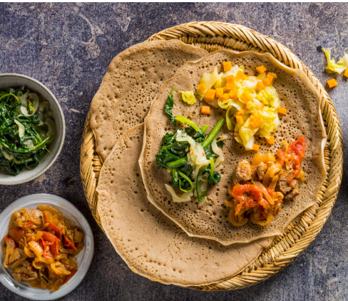

African Recipes
Explore the rich culinary heritage of Africa

Puff Puff
Puff puff is a popular West African Snack loved and enjoyed in several countries across the region,including Nigeria,Ghana,Cameroon and other West African Countries. It is a deep-fried dough that is often served as Appetizers at parties and events.

Suya
Suya is a popular Nigerian street food that is enjoyed across West Africa, particularly in Nigeria, Ghana, Cameroon, and other neighbouring countries. It is a spicy skewered meat dish that is traditionally prepared by the Hausa people of Northern Nigeria. And it's one of the most favourite Street Food Delights in Africa. Normally Serve hot, garnished with sliced onions and tomatoes, and accompanied by sliced fresh vegetables and spicy pepper sauce or yaji (a spicy peanut powder).

Jollof Rice
Jollof rice is one of the most popular West African countries cuisine, including Nigeria, Ghana, Senegal, Cameroon, and Sierra Leone. It is often considered a staple dish in these regions and it is a favourite at parties, weddings, and other special occasions. It is made from rice, tomatoes, onions, peppers, and other seasonings. The dish is cooked in one pot. It is simple and easy to cook at home and the result is delicious! it is an incredibly rich and aromatic tasty West African one-pot Meal, It consists mainly of cooked rice and tomato stew flavoured with spices such as thyme, scotch bonnet pepper, onions, and garlic.
Injera
Injera is a traditional food in Ethiopia and Eritrea which are in East Africa. It is a spongy, sourdough flatbread made from teff flour and is an essential part of the cuisine in these countries. It has been a part of the cuisine and culture in these countries for centuries. Injera is commonly served with various stews, curries, and dishes, and it is eaten by tearing off pieces of the injera and using them to scoop up the stews and curries it plays a central role in meals and gatherings. It is a significant and essential component of Ethiopian and Eritrean cuisine, representing the rich culinary heritage and traditions of these East African countries.

Bobotie
Bobotie is a traditional South African dish with Cape Malay roots. It is a Savory dish consisting of spiced minced meat baked with an egg-based topping. Bobotie is a flavourful and aromatic dish with a perfect balance of sweet and Savory Flavors, making it a favorite in South African cuisine.